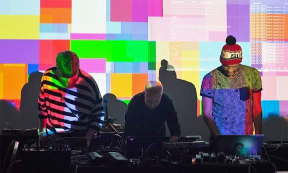

Linus Cornejo
Linus Cornejo is a student in IT, Medier och Design who also produces music.
Interactive beats
This project is made by Linus Cornejo and Erik Selin. We have made an interactive soundboard with graphics showing at the same time. The user can make their own music using our soundboard with melody loops, drum one shots and also using a drum loop. Everything is done using a midi keyboard.
